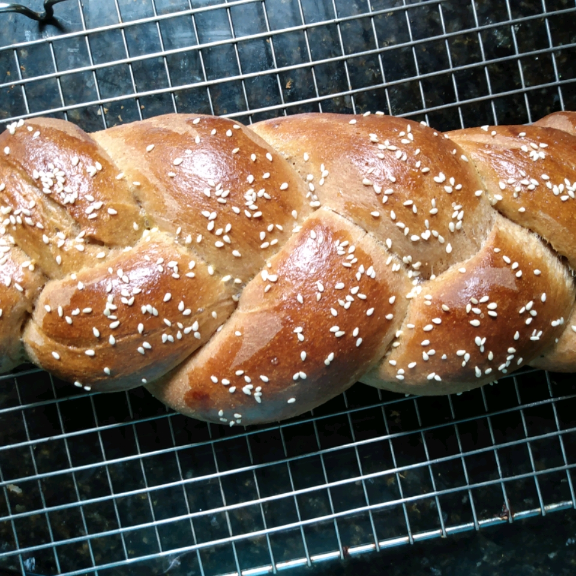

Irresistible Whole Wheat Challah

Warm and light, fresh out of the oven with butter and salt sprinkled on
top, it is a delicious gift or dessert for any occasion. Best with whole
wheat, but just white flour or a mixture works. It is easy and fun, but
takes all day. Trust me, it is so worth it!
Ingredients
- 4 cups whole wheat flour
- 1 teaspoon salt
- 2¼ teaspoons active dry yeast
- 2 tablespoons vital wheat gluten (Optional)
- ½ cup honey
- ½ cup olive oil
- 1 cup warm water
- 2 eggs
- ¼ cup raisins, to taste (Optional)
Steps
-
In a large bowl, stir together the flour, salt, yeast, and vital wheat
gluten until well mixed. In another bowl, stir together the honey, olive
oil, water, eggs, and raisins. Pour the liquid mixture into the flour
mixture, and stir until it forms a dough.
-
Turn the dough out onto a floured surface, and knead until smooth and
elastic, about 10 minutes. Form the dough into a round shape. Lightly
oil a bowl, place the dough in the bowl, and turn the dough over a few
times to oil the surface. Cover the bowl with a cloth, and let rise in a
warm, draft-free place until doubled, about 1 hour.
-
Punch down the dough, knead it a few times to remove some of the
bubbles, and cut it into 2 equal-sized pieces. Set 1 piece of dough
aside under a cloth to prevent drying out while you shape or braid the
first loaf as desired.
-
Working on a floured surface, roll the small dough pieces into ropes
about the thickness of your thumb and about 12 inches long. Ropes should
be fatter in the middle and thinner at the ends. Pinch 3 ropes together
at the top and braid them. Starting with the strand to the right, move
it to the left over the middle strand (that strand becomes the new
middle strand.) Take the strand farthest to the left, and move it over
the new middle strand. Continue braiding, alternating sides each time,
until the loaf is braided, and pinch the ends together and fold them
underneath for a neat look. Repeat for the other loaf, place the braided
loaves on a baking sheet lined with parchment paper, and let rise in a
warm place until doubled, about 30 minutes.
- Preheat oven to 350 degrees F (175 degrees C).
-
Bake in the preheated oven until golden brown, about 30 minutes. Serve
warm for best flavor.